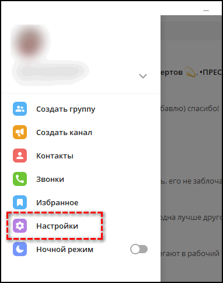
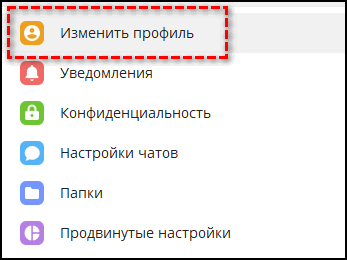
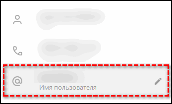
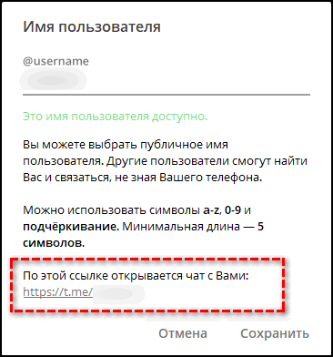
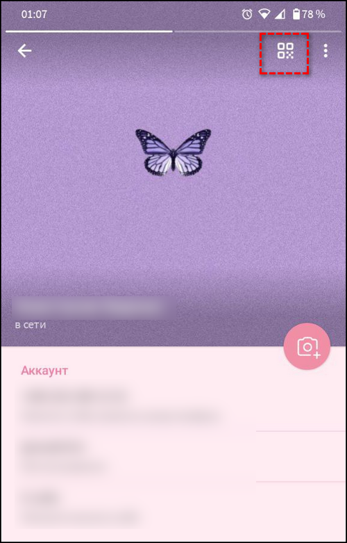
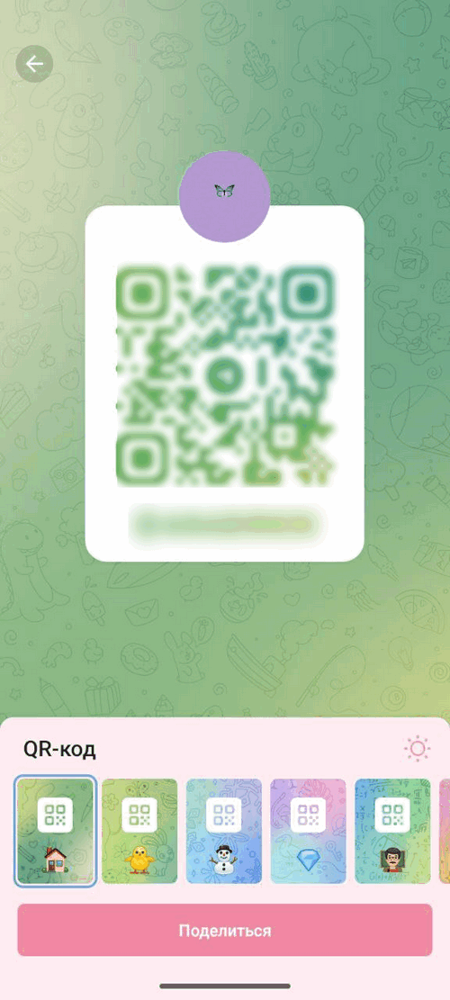

Как добавить ссылку на Телеграм в Инстаграме

Добавить ссылку из Телеграмм на Инстаграм* возможно с помощью описания страницы, ссылок в Историях. Владельцы блогов, где аудитория свыше 1000 человек, могут прикрепить ссылку с помощью стикера.
Как сделать ссылку в шапке профиля Инстаграм*
В разделе «Биография» можно добавлять ссылки на свои страницы в других социальных сетях, месссенджерах. У владельцев аккаунтов Автор и Бизнес появится соответствующая графа: «Укажите сайт».
Сделать ссылку на Телеграм:
- Открыть Телеграм с компьютерной версии – нажать по трем полоскам сверху.

- Настройки – Изменить профиль.

- Имя пользователя – значок «карандаша».

- Снизу будет указана ссылка.

С мобильной версии получить URL на личный профиль не получится, но поможет «Имя пользователя» и начало ссылки: https://t.me/имя пользователя, например: https://t.me/incta_ru - кстати это наш Телеграм канал, подпишись, там все оперативные новости и крутые фишки.
Скопировав адрес, владелец страницы сможет указать его в своем Инстаграме*:
- Зайти в социальную сеть – нажать по кнопке: «Изменить профиль».
- Пункт «Сайт» - вставить ссылку из Телеграма.
- Сохранить внесенные изменения.
Теперь посетители страницы смогут перейти в профиль Телеграма, отправить сообщение и добавить в контакты.
Как прикрепить ссылку в Сторис
Зачастую прикрепляют ссылку в Историях, чтобы подписчики оставались на связи. Есть два варианта, как уведомить последователей:
- с помощью ссылки в Стикерах;
- просто добавить URL с помощью текста, даже такой простой способ помогает продвигать Телеграм, наращивая там подписчиков и аудиторию.
Как добавить с помощью стикера:
- Зайти в Инстаграм* – нажать «История».
- Добавить картинку – выбрать стикер: «Ссылка».
- Добавить ссылку на Телеграм – опубликовать.
Также, у владельцев таких страниц может быть значок в виде «цепи», где можно добавить адрес. Чтобы привлечь внимание читателей, можно добавить текст «Переходите по ссылке» или воспользоваться поиском по стикерам с запросом «Стрелки» или «arrow».
Сделать QR код для Телеграма
Добавить ссылку в профиль Инстаграма* возможно через QR-код, который доступен через мобильное приложение. Пользователь сможет создать скриншот и поделиться им в своей Истории. Как сделать код:
- Зайти в Телеграм – нажать по трем полоскам сверху.
- Нажать по аватарке – сверху появится символ в виде QR-кода.

- Выбрать дизайн визитки – снизу кнопка: «Поделиться».

- Указать вариант: «Instagram* – Stories» - перейти в социальную сеть и отредактировать.
Или же, пользователь может создать скриншот и опубликовать его в Инстаграме* в виде картинки. Чтобы зрители смогли перейти по QR-коду, им нужно:
- Сделать скриншот Истории.
- Она появится в виде сохраненного файла в Галерее.
- Перейти к Галерее – выбрать: «Поиск на фото».
- Появится ссылка на Телеграм-канал.
Таким способом можно переходить в любые социальные сети, если есть изображение с QR-кодом.
Шаблоны для Сторис в Инстаграм*
Шаблоны для Историй будут полезны тем пользователям, которые хотят сообщить о том, что покидают социальную сеть. Это изображения, которые нужно добавить в Сторис и с помощью инструмента: «Текст» разместить ссылку.
Скачать Шаблоны для Историй в Инстаграме*
Или, есть второй вариант – воспользоваться мобильными редакторами. Например, написать на изображении с помощью PicsArt или InShot. Как добавить текст:
- Выбрать любое изображение из Архива.
- Скачать и установить из Play Market/AppStore «InShot».
- Открыть приложение – выбрать: «Новый проект».
- Фото – выбрать картинку.
- Инструмент: «Текст» - добавить текст ссылки.
- Сохранить на телефон и опубликовать в Инстаграме*.
Архив в формате RAR, поэтому предварительно пользователю нужно его открыть с помощью приложения WinRar.